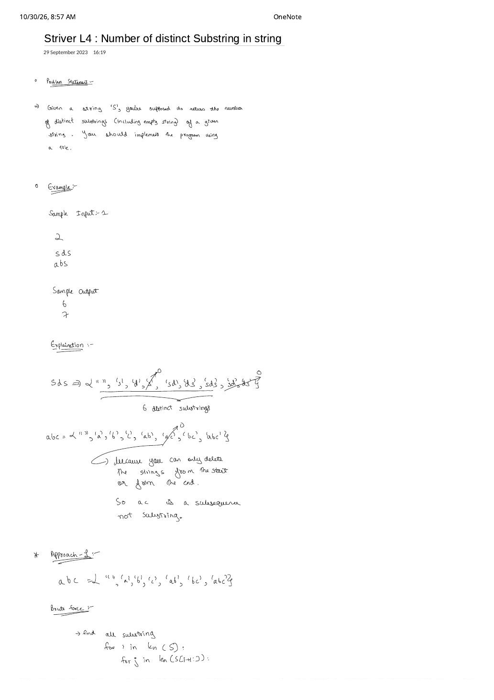

Number of Distinct Substrings in a String (Striver L4)
Expanded from handwritten competitive coding study note: 06_Striver_L4_Number_of_distinct_Substring_in_string.pdf
Every contiguous substring S[i..j] of a string S is simply a prefix of the suffix S[i..N-1]. Inserting all $N$ suffixes of S into a minimal flag-free Trie simultaneously eliminates the $O(N)$ per-substring slicing cost of hash sets and compresses shared prefixes in memory—counting every distinct substring by counting newly allocated Trie nodes! This post expands Striver Trie Lecture 4 (Coding Ninjas Count Distinct Substrings; closely related to LeetCode 1698).
1. Problem Statement & Substring vs. Subsequence
Count Distinct Substrings (Including Empty String)
Given a lowercase string S of length $N$, return the total number of distinct contiguous substrings of S, including the empty string "", implemented using a Trie. (Note: on LeetCode 1698, the empty string is excluded, so return cnt instead of cnt + 1.)
Handwritten Clarification: Why "ac" Is Crossed Out in "abc"!
In 06_Striver_L4_Number_of_distinct_Substring_in_string.pdf, two examples are worked out by hand:
S = "abc"(or"abs") $\to 7$: Enumerating candidates gives{"", "a", "b", "c", "ab",. As annotated directly beneath the crossed-out"ac", "bc", "abc"}'ac': "because you can only delete from the start or from the end—soacis a subsequence, not a substring!"S = "sds"$\to 6$: All contiguous slices are"","s"($S[0..0]$),"d"($S[1..1]$),"s""sd"($S[0..1]$),"ds"($S[1..2]$), and"sds"($S[0..2]$) $\implies$ $6$ distinct substrings.
2. Progression: $O(N^3)$ Brute-Force Set vs. $O(N^2)$ Flag-Free Suffix Trie
- Brute Force (
unordered_set<string>/set<string>):- Use two nested loops $i \in [0, N-1]$ and $j \in [i, N-1]$ (written at the bottom of the scan) to generate all $\frac{N(N+1)}{2}$ slices.
- Inserting
S.substr(i, j - i + 1)into anunordered_set<string>allocates a fresh string of average length $\Theta(N)$ and hashes all $\Theta(N)$ bytes: $$\text{Time} = \sum_{i=0}^{N-1} \sum_{j=i}^{N-1} O(j - i + 1) = O(N^3), \qquad \text{Memory} = O(N^3) \text{ characters!}$$ (Withstd::set<string>, tree comparisons add another $\log(N^2) = O(\log N)$ factor $\implies O(N^3 \log N)$!)
- Optimal Trie Insights ($O(N^2)$ Time & Prefix-Compressed Space):
- Incremental suffix extension: Fix start index $i$, place
node = root, and advance $j$ from $i$ to $N-1$ one character at a time. Extending fromS[i..j-1]toS[i..j]is a single $O(1)$ pointer stepnode->get(S[j])—zero string copies, zero re-hashing! - 1-to-1 bijection between nodes and distinct substrings: Whenever
!node->containsKey(S[j]), the substringS[i..j]has never occurred anywhere earlier inS. Allocating that child node incrementscnt++; if the child already exists,S[i..j]is a duplicate and we simply step into it! - Strip
bool flagfromNode! Unlike dictionary Tries where internal prefixes might not be valid words, every prefix ofS[i..N-1]IS a valid contiguous substring ofS! Removingbool flagsaves memory on every single node.
- Incremental suffix extension: Fix start index $i$, place
3. Step-by-Step Suffix-Trie Trace on S = "sds"
S[2] = 's', root->links['s' - 'a'] already points to node #1, automatically skipping the duplicate "s" in $O(1)$.4. Clean C++ & Python Implementations
#include <bits/stdc++.h>
using namespace std;
// Minimal flag-free Trie node: existence of the node itself proves substring existence!
struct Node {
Node* links[26] = {nullptr};
bool containsKey(char ch) const { return links[ch - 'a'] != nullptr; }
Node* get(char ch) const { return links[ch - 'a']; }
void put(char ch, Node* node) { links[ch - 'a'] = node; }
};
int countDistinctSubstrings(const string& s) {
Node* root = new Node();
int cnt = 0; // Counts distinct non-empty substrings
int n = (int)s.size();
for (int i = 0; i < n; i++) {
Node* node = root;
for (int j = i; j < n; j++) {
if (!node->containsKey(s[j])) {
node->put(s[j], new Node());
cnt++; // Newly discovered substring s[i..j]
}
node = node->get(s[j]);
}
}
return cnt + 1; // +1 for the empty substring ""
}def count_distinct_substrings(s: str, include_empty: bool = True) -> int:
root = {}
cnt = 0
n = len(s)
for i in range(n):
node = root
for j in range(i, n):
ch = s[j]
if ch not in node:
node[ch] = {}
cnt += 1
node = node[ch]
return cnt + (1 if include_empty else 0)5. Combinatorial Bounds, Complexity & Advanced $O(N)$ Ceiling
- Time Complexity: Outer loop runs $N$ times, inner loop averages $\frac{N+1}{2}$ iterations with $O(1)$ work per step $\implies$ $O(N^2)$ deterministic time (suitable up to $N \approx 2000$–$3000$).
- Space Complexity & Extremal Strings:
- Worst case (all characters distinct, e.g.
"abcde"): Zero duplicate substrings occur, creating $\frac{N(N+1)}{2}$ child nodes and returning $1 + \frac{N(N+1)}{2}$. Even in this worst case, prefixes are shared—storing $\Theta(N^2)$ nodes rather than $\Theta(N^3)$ characters! - Best case (all characters identical, e.g.
"aaaaa"): Suffixes"aaaaa","aaaa", …,"a"all walk down a single unary chain of $N$ nodes, returning $N + 1$ in $O(N)$ memory!
- Worst case (all characters distinct, e.g.
- What if $N = 10^5$? An uncompacted Suffix Trie can still allocate $\Theta(N^2)$ nodes when characters vary. For $N \ge 10^5$, compressing unary chains gives a Suffix Tree / Suffix Automaton, or building a Suffix Array + Kasai's LCP array computes $\frac{N(N+1)}{2} - \sum \text{LCP}[i]$ in $O(N \log N)$ or $O(N)$ time and $O(N)$ space.
From the Handwritten Notes
View original handwritten page — Striver L4: Number of Distinct Substrings in a String (sds → 6, abc → 7 & Substring vs. Subsequence)


"sds" ($6$) and "abc" ($7$), why "ac" is a subsequence rather than a substring, and nested-loop brute-force baseline.